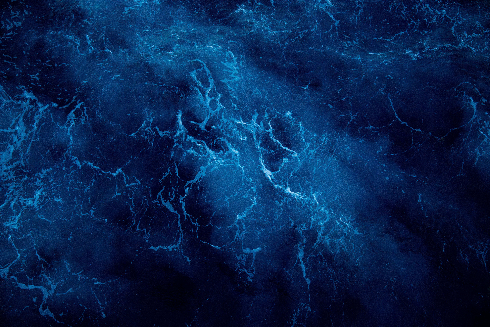

海を、読み解く。
データで、つなぐ。
沿岸域の環境調査から、取得したデータの整理・解析、報告書の作成までを一貫して担う技術会社です。現場に出る技術者が、そのままデータを扱います。
SERVICE
事業内容
調査の計画立案から現地作業、データ解析、報告書の作成まで。工程を分断せず一社で担うことで、現場の状況を踏まえた解釈をお届けします。
海洋環境調査
水質・底質・生物相の各調査を、対象海域の特性に応じた計画で実施します。潜水調査、採水・採泥、環境DNA調査にも対応しております。
調査データの整理・解析
過年度データとの比較、統計解析、経年変化の可視化まで対応します。他社が取得されたデータの整理・再解析のみのご依頼も承ります。
報告書・資料作成
行政提出用の報告書から、地域住民向けの説明資料まで。専門家以外の方にも伝わる図表設計を心がけています。
STRENGTH
当社の強み
規模の大きさではなく、一件ごとの精度でお応えしています。
ONE CONTINUOUS PROCESS
- 01現地調査SURVEY
- 02データ解析ANALYSIS
- 03報告・提案REPORT
現場で得た知見を、意思決定の資料へ。
-
現場に出た技術者が解析まで行います
調査と解析を分業しません。当日の海況や濁りの状況を知る人間がデータを扱うため、数値の背景にある要因まで踏み込んだ考察が可能です。
-
小規模だからこその調査計画の柔軟性
天候による日程変更や、現地での追加調査にも迅速に対応します。ご相談から着手までの意思決定が早いことが、少人数体制の利点です。
-
過年度データとの整合性を担保
長期モニタリングでは、手法のわずかな違いが経年比較を難しくします。過去の調査手法を精査したうえで、比較可能な形で取得します。
FLOW
ご依頼の流れ
初回のご相談から報告書のご提出まで、担当者が一貫して窓口を務めます。
STEP 01
お問い合わせ
調査の目的、対象海域、ご予算の目安をお聞かせください。仕様が未確定の段階でも構いません。
STEP 02
調査計画・お見積り
目的に応じた調査項目と工程をご提案し、お見積りをご提出します。
STEP 03
現地調査
海況を見ながら日程を確定し、調査を実施します。速報値は現地から随時ご共有します。
STEP 04
解析・報告
データを解析し、報告書としてご提出します。ご説明の場を設けることも可能です。
COMPANY
会社概要
※ 以下はサンプルとして作成した架空の情報です。
| 会社名 | 株式会社シオミ技研（架空） |
|---|---|
| 所在地 | 〒000-0000 ○○県○○市○○町 0-0-0 |
| 設立 | 2003年4月 |
| 代表者 | 代表取締役 ○○ ○○ |
| 事業内容 | 海洋環境調査／調査データの整理・解析／報告書および資料の作成 |
| 保有資格 | 技術士（環境部門）／潜水士／小型船舶操縦士 |
| 主な取引先 | 地方自治体、建設コンサルタント、大学研究機関 |
CONTACT
調査のご相談を承ります
「どこまで調べるべきか分からない」という段階でも構いません。目的をお聞かせいただければ、必要な調査項目からご提案いたします。
表示確認用のデモです。お問い合わせは送信されません。